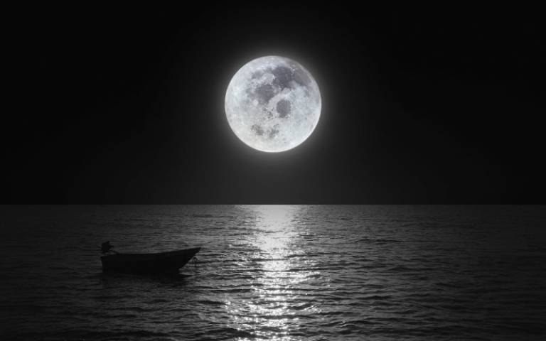

Supermoon: How an illusion makes the full Moon appear bigger than it really is

No matter where you are in the world, and no matter how light the skies are, the Moon is always there. Our only
natural satellite has inspired literature, art and science for thousands of years.
As the days lengthen in the northern hemisphere, it gets harder to spot some of the fainter stars in the sky.
But our Moon is still there, and every few months we have a special sighting.
Not only is the Moon on 26 April a full Moon, it’s also what is known as a supermoon – and the first of the
year. To understand why it is a supermoon, it’s important to understand a little more about why different parts
of the Moon are lit up at different times of the month, and also a little more about the Moon’s orbit.